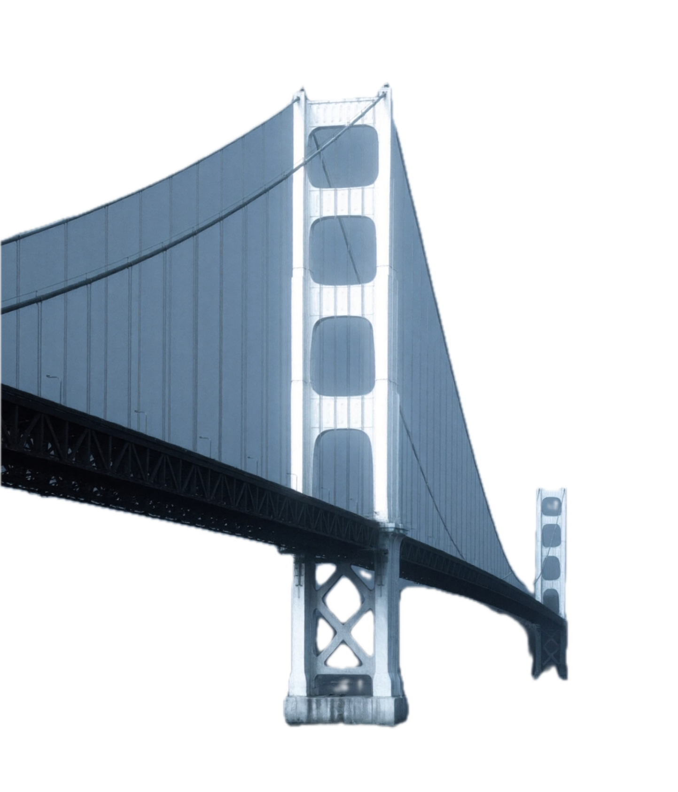
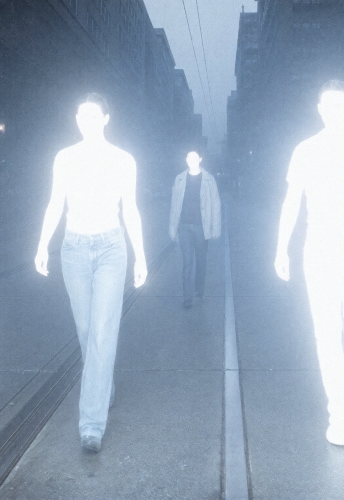
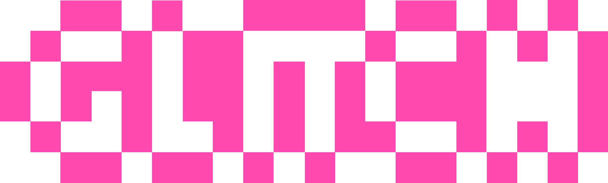

To GL/TCH is to take a 2026 technology — generative AI

face recognition surveillance
surveillance recommendation algorithms
recommendation algorithms.png) cryptocurrency
cryptocurrency
online betting — and explore how body and garment aesthetics warp how we view this technology.
To GL/TCH is to take a 2026 technology — generative AI

face recognitionsurveillancerecommendation algorithmscryptocurrency
online betting — and explore how body and garment aesthetics warp how we view this technology.